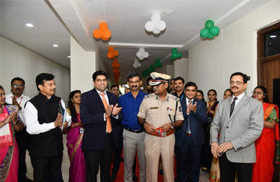
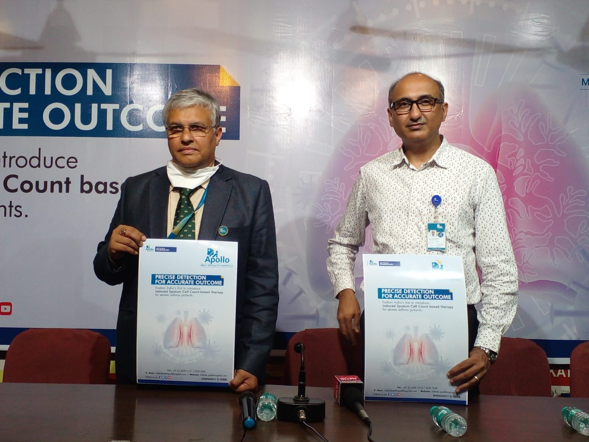

Hospital in Bangalore

Address
Hospitals in Bangalore 154 / 11, Bannerghatta Road Opp. I.I.M Bangalore - 560 076
About hospital
Hospitals at Bannerghatta is a 300 bedded hospital, located in the heart of the capital. The hospital is equipped with state-of-the-art technology making it a powerhouse of healthcare in Bangalore and is committed to invest in the latest medical technology on par with the latest worldwide developments, to ensure that every one of our patients benefit from the latest knowledge.
Some of the equipment’s and technology available at Apollo Hospitals, Bangalore include:
- Robotic Assisted Surgeries
- Thallium Laser-First in India
- Holmium Laser-First in South India
- Digital X-Ray-First in Karnataka
- 128 slice CT angiogram
- 3 Tesla MRI
- PET-CT
- True Beam Machine for Cancer Radiotherapy Low energy & High energy Linear Accelerators
- Navigation System for accuracy in surgical procedures
- 4-D Ultrasound for 4-dimensional sonography
- Digital Fluoroscopy
- Gamma Camera
- Stereotactic Robotic Radio- surgery
- Autologous Bone Marrow Transplantation
- Multiorgan Transplant Facility
Contact
Hospital
154 / 11, Bannerghatta Road
Opp. I.I.M
Bangalore
560 076
| Useful Telephone Numbers | |
|---|---|
| Emergency: | +91 7936463672 |
| Immigration: | +91 7936433672 |
| Health Check: | +91 7936463572 |
| Appoinment Desk: | +91 8936463672 |
| International wing: | +91 7936463672 |
| Main pharmacy: | +91 9936463672 |
| Duty adminstration: | +91 6936463672 |
| Insurence Desk: | +91 9364636720 |
Highlight & update
|  |  |
 |